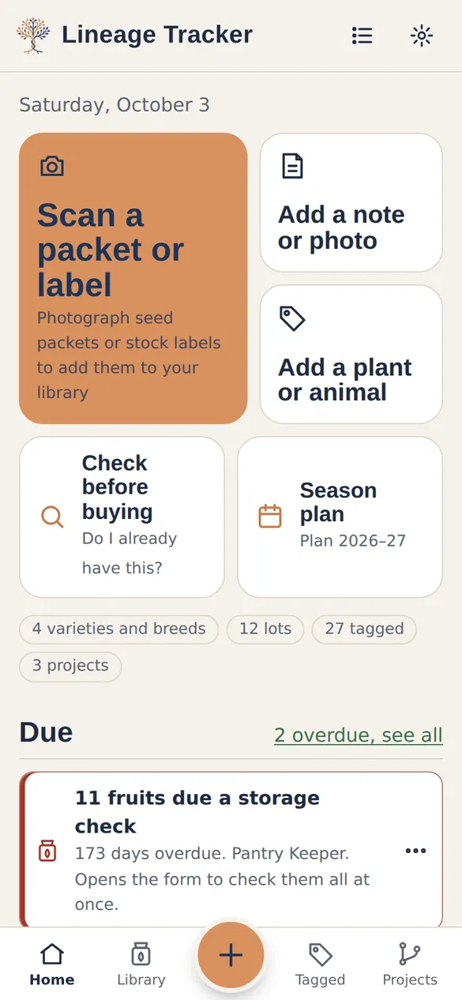
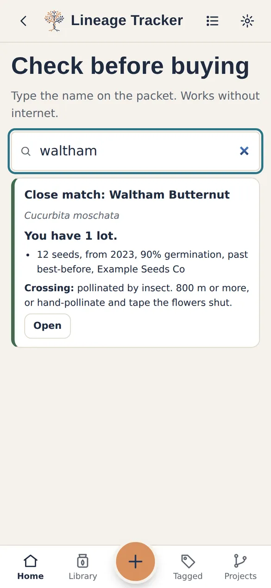
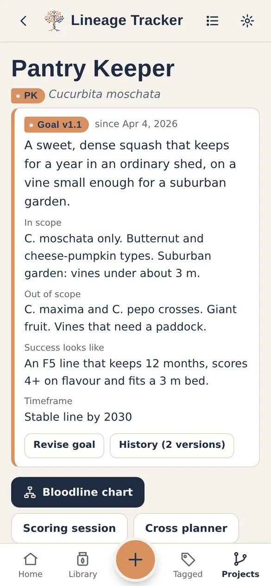
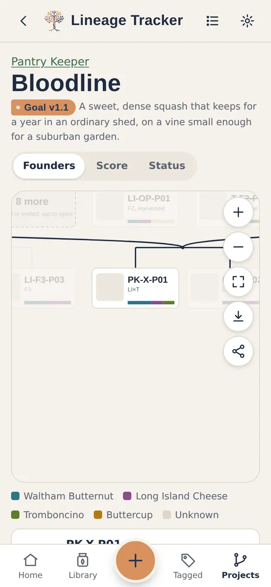

Lineage Tracker
Lineage TrackerLineage Tracker
Breeding records for plants and animals
A free app for seed savers, home gardeners and small-scale breeders. Keep your seed library, follow every plant and animal through its life, record crosses, and watch your bloodlines grow, season after season.
Everything stays on your own device. No account, no ads, no subscription.
Made for plants and animals
See what it does for you, how each feature works, and where to find it.
For plants
Seed library, check before buying, season plans and seed trays, through to seed saving, crosses and breeding projects.
See the plant features ›For animals
Every animal with its IDs, pairings, hatch and birth dates, health and treatments, inbreeding checks and pedigree certificates.
See the animal features ›As simple or as detailed as you like
When you first open it, Lineage Tracker asks what you keep (plants, animals or both) and how you'll use it. It only shows what you need, and you can change your mind any time without losing anything.
Garden
For knowing what you've got.
- Seed library from packet photos
- Check before buying
- Season plan and seed trays
- Notes and photos as things grow
Seed saver
For saving your own seed and trying a few crosses.
- Parents recorded on saved seed
- Germination tests
- Harvests and storage checks
- Crossing warnings and labels
Breeder
For projects that run over many generations.
- Goals with version history
- Selection scores and comparisons
- Bloodline chart and cross planner
- Inbreeding checks and progress charts
What it does
Seed and stock library
Photograph a packet to add it. Track how much you have, how old it is and how well it germinates, including cuttings, tubers, young plants and hatching eggs.
Every plant and animal
Give the ones that matter their own label, photo history, notes and measurements. Seed trays let you pot up the survivors as tracked plants.
Crosses and bloodlines
Record pollinations, matings and clones. A family-tree chart shows where each one came from and how much of each founder it carries.
Goals and selection
Write down what you're breeding towards, score candidates against it, and see each generation's progress.
Weather by season
See each season's rain, heat and frost against a usual year, alongside your results. Add your own rain gauge if you keep one.
Share, swap or sell
Share a variety with a friend, history included. If you choose to sell or swap, list prices and postage. Lineage Tracker never handles payment.




Your records stay yours
- Stored on your device. Works without internet, and nothing leaves it unless you choose.
- One-tap backups. A single file with every record and photo, plus spreadsheet copies you can open without the app.
- Optional sync between your phone, tablet and computer through your own Google Drive. There's no Lineage Tracker server in between.
- No payments, no personal details. When you share or list something, only what you type is shared.
- Read more: Your data, your choice.
- Bring your old records. Import spreadsheets or files converted with Claude or ChatGPT.
Help shape it
Lineage Tracker is being tested by gardeners and breeders before its wider launch. Try it, tell us what works and what doesn't, and help get it onto Google Play.
Free, and built in the open
Lineage Tracker is free to use. The code and its documentation are on GitHub, including a plain-English guide to the data format so your records are never locked in.